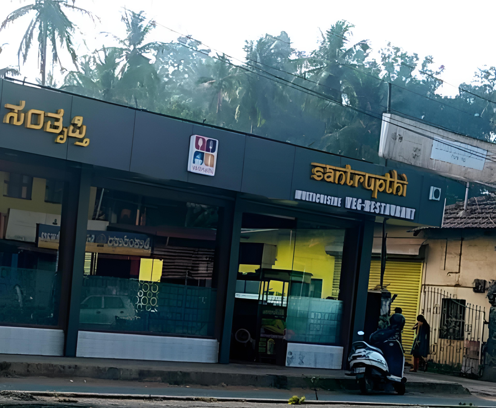

2.Santrupthi Hotel
Restaurants in Puttur provide various cuisines with an aesthetic seating arrangement and the best services.Restaurants act as great places for many situations.From team meetings to family dinners, it can help serve a wide range of audiences.
 click here to visit